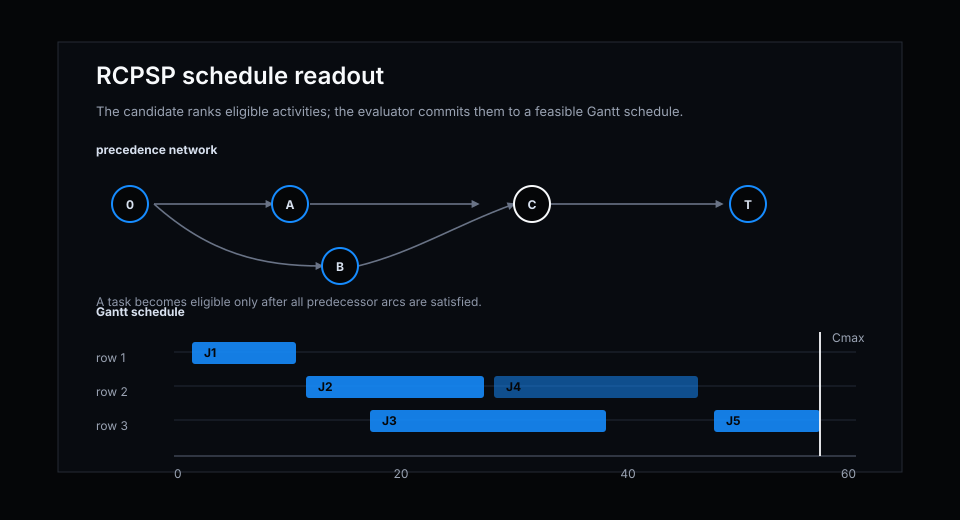
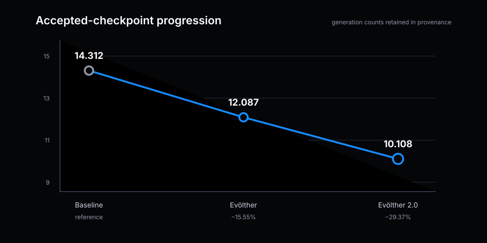
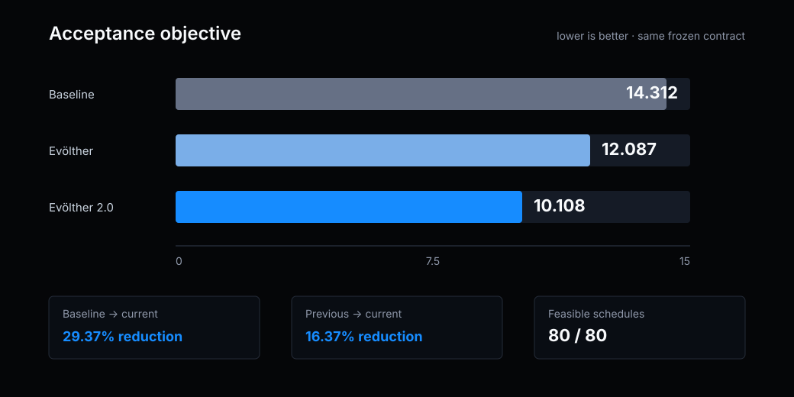
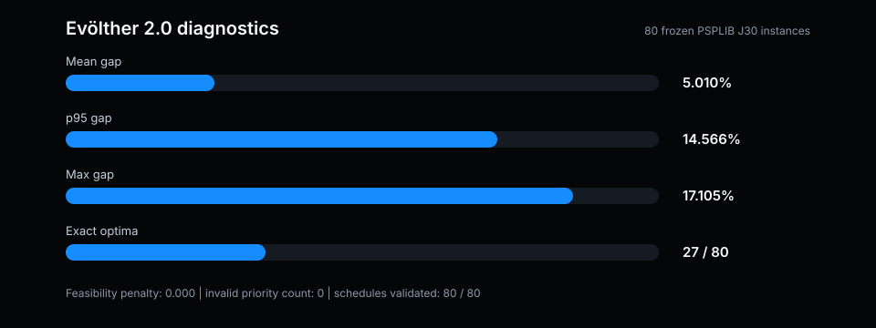
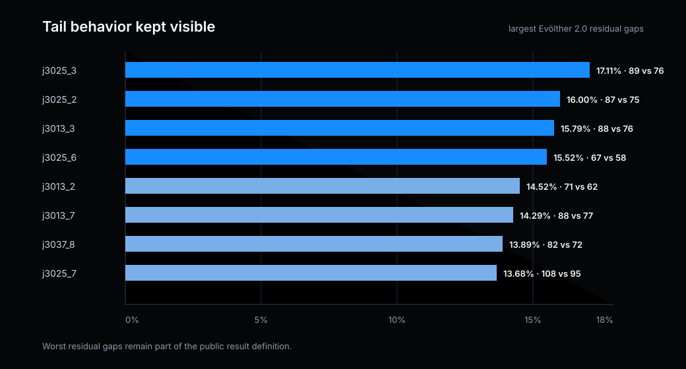

Frozen baseline
14.312reference
Operational planning · Updated August 2026
A deterministic activity-ranking policy improved across independent search campaigns while the benchmark, objective, and feasibility checks stayed fixed.
10.108−29.37%
The current deterministic policy passes the complete frozen portfolio with 80 out of 80 schedules feasible. The detailed comparison follows in Results.
This note reports a deterministic dispatch rule for the Resource-Constrained Project Scheduling Problem (RCPSP). On a frozen public subset of PSPLIB J30, the accepted score progressed from 14.312 at baseline to 12.087 with Evölther and 10.108 with Evölther 2.0. The current result is a 29.37% reduction from baseline and preserves feasibility on all 80 evaluated instances.
The benchmark is deliberately external and bounded. Every portfolio instance has a proven optimal makespan, so the score measures schedule quality against a reference optimum rather than machine speed. This is a benchmark result on the fixed portfolio, not a claim that every RCPSP instance or production-planning workflow is solved.
RCPSP schedules activities subject to precedence constraints and renewable-resource limits. An activity may start only after all predecessors finish, and the total demand of concurrently active activities must stay within available capacity. The objective is to minimize the project makespan, the finish time of the terminal activity.


The resource profiles come from the same schedules visualized later in Figure 5. Evölther 2.0 redistributes demand earlier without crossing any capacity line, then releases every resource twenty time units sooner. The evaluator still uses serial schedule generation: it identifies eligible activities, scores them, and places the selected activity at its earliest resource-feasible start. Evölther changes the priority policy, not the feasibility validator.
The public portfolio contains 80 frozen PSPLIB J30 single-mode instances: parameters 1, 7, 13, 19, 25, 31, 37, and 43 crossed with instances 1 through 10. Each instance contains 32 jobs including dummy source and sink activities, renewable-resource capacities, precedence arcs, and a proven optimal makespan.
| Field | Public contract |
|---|---|
| Dataset | PSPLIB J30 single-mode RCPSP |
| Portfolio | 80 frozen instances |
| Reference | Proven optimal makespan for every instance |
| Objective | mean_gap_pct + 0.35 × p95_gap_pct + feasibility_penalty |
| Direction | Lower is better; feasibility penalty must remain zero |
For instance k, the gap is the candidate makespan minus the proven optimum, divided by that optimum. The accepted objective combines mean portfolio quality with a 35% weighting on the 95th-percentile gap. A candidate must also return finite priorities, choose only eligible activities, schedule every activity exactly once, respect all precedences, and remain within every resource capacity.
The current Evölther 2.0 candidate keeps the serial schedule generator unchanged and replaces only the deterministic activity-ranking policy. The rule combines precedence depth, duration, successor structure, feasible-start information, bottleneck pressure, aggregate resource pressure, and remaining downstream work. This remains an inspectable dispatch heuristic rather than a replacement solver.
The most informative view is the complete file diff. It shows that the public data contract, program wrapper, and final selector remain unchanged. Evölther 2.0 replaces one bounded function: the activity-priority score.
Loading complete file diff…The coefficients were selected by measured portfolio performance rather than assigned a theoretical meaning. To test their contribution, each feature was removed in turn by setting its coefficient to zero and replaying all 80 instances. Every single-feature ablation worsened the accepted score. Open the complete ablation replay.
| Signal removed | Weight | Score without it | Δ score |
|---|---|---|---|
| Earliest feasible start | −13.252 | 15.417 | +5.309 |
| Downstream critical path | +3.336 | 15.132 | +5.023 |
| Transitive successors | +3.337 | 12.159 | +2.050 |
| Weighted demand | +2.451 | 12.139 | +2.031 |
| Resource wait | +1.057 | 11.664 | +1.555 |
| Precedence wait | −0.308 | 11.267 | +1.159 |
| Bottleneck ratio | +3.348 | 10.870 | +0.762 |
| Successor work | −0.209 | 10.860 | +0.752 |
| Duration | +0.187 | 10.731 | +0.623 |
| Resource pressure | −0.701 | 10.651 | +0.543 |
| Direct successors | −0.093 | 10.521 | +0.412 |
| Projected finish | −0.018 | 10.174 | +0.066 |
The ablation identifies contribution, not isolated causality: several signals are correlated and their numeric scales differ. It nevertheless shows that feasible-start timing and downstream critical-path structure are the two load-bearing components. The remaining features refine resource contention, successor unlocking, and tie behavior around that core.
The accepted history contains three directly comparable checkpoints. Figure 3 shows the score progression without forcing the two Evölther systems onto one synthetic generation axis.

Evölther first reduced the objective by 15.55%. Evölther 2.0 then removed another 2.0 score points from that incumbent, producing a further 16.37% reduction. Because the evaluation contract did not change, the three checkpoints can be compared directly.

The gain is not produced by sacrificing the difficult tail. Mean gap falls from 6.04% to 5.01%, while the 95th-percentile gap falls from 17.28% to 14.57%. The exact-optimum count rises from 19 to 27 schedules, and feasibility remains 80 out of 80.
| Metric | Baseline | Evölther | Evölther 2.0 |
|---|---|---|---|
| Acceptance score | 14.312 | 12.087 | 10.108 |
| Mean gap | 7.13% | 6.04% | 5.01% |
| P95 gap | 20.52% | 17.28% | 14.57% |
| Exact optima | 23 / 80 | 19 / 80 | 27 / 80 |
| Validated schedules | 80 / 80 | 80 / 80 | 80 / 80 |
Against the baseline, Evölther 2.0 wins on 35 portfolio instances, ties on 27, and loses on 18. The accepted claim is therefore portfolio-level improvement rather than universal instance dominance. The clearest compression example is j3025_9, where the new ordering shortens makespan from 112 to 92 against a proven optimum of 84.
j3025_9Baseline 112Evölther 2.0 92Optimum 8471.4% of the baseline gap removed

Because both schedules are superimposed, movement is visible directly: blue to the left of grey means Evölther 2.0 places that activity earlier. The new policy starts J4 before J3, brings much of the middle dependency chain forward, and moves the terminal J29–J31 sequence substantially earlier. The evaluator applies exactly the same precedence and resource-capacity checks to both schedules.

The distribution makes the boundary of the result visible. Evölther 2.0 does not dominate every schedule: most regressions are one or two time units, while the improvement side contains several reductions of eight to ten units and the 20-unit reduction on j3025_9. Those asymmetric changes produce the lower portfolio mean and tail score. Inspect all 80 instance outcomes.

Figure 7 separates the acceptance score from its underlying diagnostics. The current mean makespan is 5.01% above proven optimum, while the worst single residual gap is 17.11%. Figure 8 then keeps the eight largest residual gaps visible, including their current makespan and proven optimum.

This result is limited to the frozen 80-instance PSPLIB J30 subset. It does not claim evaluation over all 480 J30 instances, measure production integration behavior, or establish robustness under different project distributions. The accepted rule remains a dispatch heuristic; other project classes, resource models, or operational priority policies require a new evaluation contract.
The public bundle includes the accepted candidate, evaluation contract, retained metrics, provenance, replay confirmation, and figures. Replaying the result requires the same portfolio, proven optima, score formula, and lower-is-better direction. Changing the instance set or objective creates a new evaluation.